把 14 个网络电视 / 直播产品拆到「信息架构、首屏任务、EPG、播放 OSD、失败恢复、源管理、视觉语言」七个层面，回答三个问题：用户为什么留在一个直播产品里、我们现在的骨架差在哪、接下来按什么顺序补。
这份报告不是功能勾选表，而是一份「界面证据 + 交互拆解 + 落地规格」的研究。所有判断都尽量落在可见的界面元素或可验证的代码行为上。
标 C 的部分不声称是真实截图。
| 形态 | 代表产品 | 主场景 | 用户预期 | 变现 | 核心壁垒 | 对我们的意义 |
|---|---|---|---|---|---|---|
| 客厅专业播放器 | TiviMate、OTT Navigator、Perfect Player、GSE | Android TV / 盒子，遥控器 | 换台快、节目单准、失败能自愈 | 买断 / 年费解锁 | EPG 与遥控器交互的细节积累 | EPG、Now/Next、备用线路的主要参照 |
| 内容门户型播放器 | IPTV Smarters、IPTVX、iPlayTV | 手机 / 平板 / Apple TV | 一个账号看直播 + 点播，能投屏 | 订阅 / 账号分发 | 账号接入门槛低、内容统一搜索 | 统一搜索、收藏与「最近」的入口设计 |
| 媒体服务器 Live TV | Channels DVR、Plex、Jellyfin、Kodi PVR | 家庭服务器 + 多端 | 录制、回看、多用户、跨设备续看 | 订阅 / 开源 | 服务端 EPG、录制与转码 | Guide 网格、节目为中心的内容组织 |
| 国内直播 / 运营商 | 电视家（已停服）、电信 / 移动 / 联通机顶盒 | 客厅电视，老人小孩 | 频道号直达、上下换台、7 天回看 | 宽带捆绑 / 广告 | 合规源、回看与 EPG 的稳定性 | 宫格 + 数字键 + 多线路无感切换 |
内容优先（Smarters / IPTVX / Plex）：首屏是海报、剧集、推荐，直播只是其中一个 tab。用户先想「看什么」，再想「哪个台」。
频道优先（TiviMate / 运营商盒子）：首屏就是台列表或节目单。用户先想「看哪个台」，节目是附属信息。
我们是频道优先 + 媒体库统一的组合。这条路线更接近 TiviMate / iPlayTV，而不是 Smarters。因此 EPG 与换台效率的优先级高于推荐流。
基线快照：本节记录的是补 EPG / 备用线路之前的代码状态，用于说明差距从哪里来；当前实现与能力状态见 9.13 / 9.14。
一条 M3U 进来后，经历四步：解析属性、清洗台名、按频道去重择优、按源缓存并合并排序。关键实现集中在 M3U.swift 与 IPTVBrowserModel.swift。
去重键优先用 tvg-id（截断 @ 后的画质后缀），否则用清洗后的台名。同一频道只保留分数最高的一条：
| 因子 | 分值 | 意图 |
|---|---|---|
| 画质 1080 / 720 / 2160 | + 数字本身 | 画质优先 |
| HTTPS | +10 | 减少明文与混合内容问题 |
| HLS（.m3u8） | +6 | 直播容错与自适应更好 |
[Not 24/7] | −3 | 非全天候流不稳定 |
[Geo-blocked] | −4 | 大概率播不了 |
分组为 undefined | −1 | 源质量差的信号 |
副作用（当时）：评分只用于「挑一条」，其余候选被直接丢弃 —— 这正是后来补备用线路的起点。现在候选线路会作为 alternateStreamURLs 一起入库。
channelCache），启停源会即时重建合并列表。.connectivity 任务，进入统一任务中心；一次只测一个，避免同时打多个站点。当时的缺口：没有 EPG、没有定时巡检、没有源优先级、没有「上次可用线路」记忆。其中 EPG 与线路记忆已在 2.0 补齐；巡检仍是「进入信号页时补旧结果」的低频策略。
下图是补齐前的三页结构；现在是「直播 / 节目单 / 回看 / 信号 / 源库」五 Tab，见 9.2。
TVChannel 当初只有单条 streamURL，没有候选线路结构（已在 9.14 补上 alternateStreamURLs）PhotoItem 进入通用查看器，播放器不知道「这是一个频道」（已在 9.14 通过 tvPlaybackChannel 补上频道语义）#FF4D57 直播点、错误强调#4DD6FA 选中、悬停、1080p#FACC66 4K / 2160p 点缀#0B0D16 → #131826如果只看一个产品来定「客厅直播」的标准，就是 TiviMate。它的三层结构非常清楚：分组 → 频道 → 节目，任何一层都不把用户踢出当前上下文。
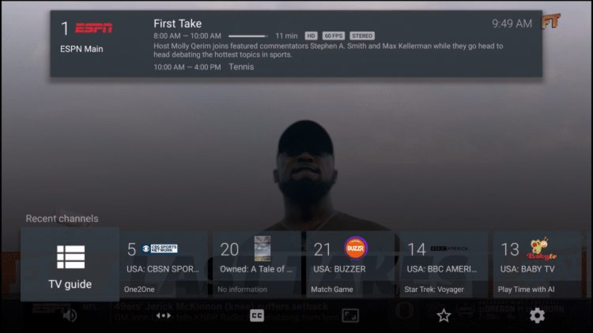
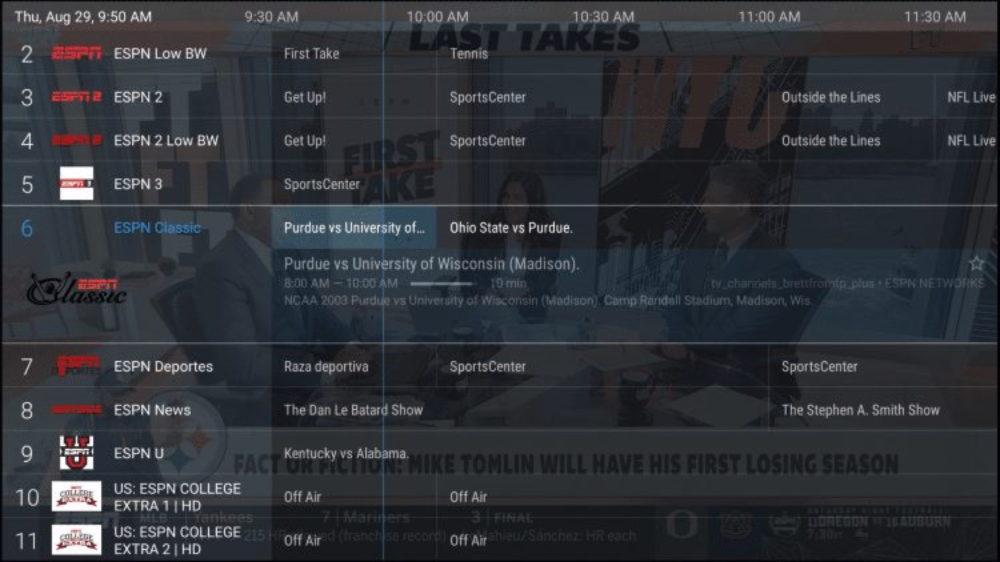
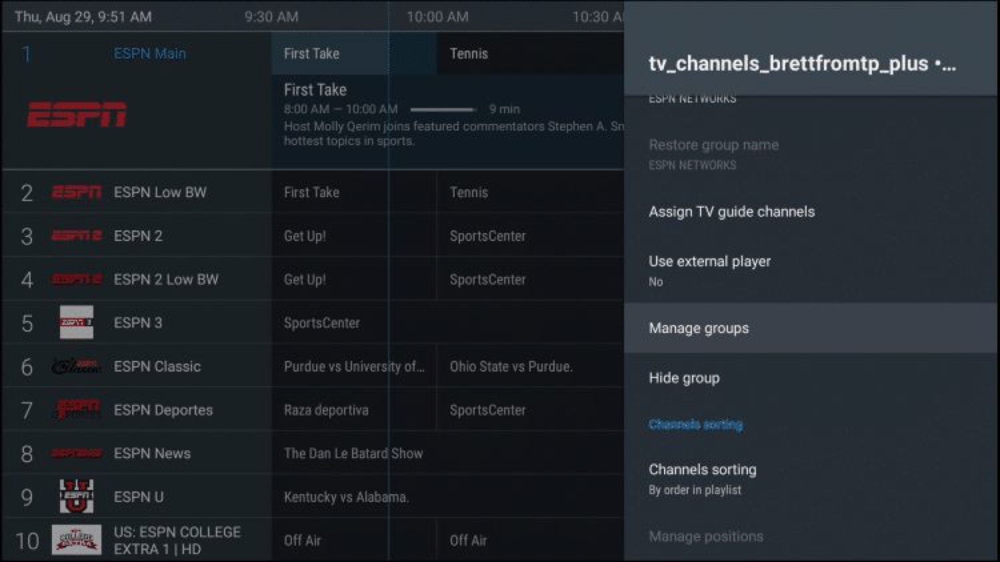
遥控器焦点模型不能照搬到桌面：鼠标悬停、右键菜单、⌘F 搜索要替代方向键与长按 OK。
仅 Android；高级能力付费；不做本地媒体库，和拾光的「照片 + 影院 + 电视」统一叙事不同。
Smarters 的核心不是「电视」，而是「一个账号下的内容门户」。它的首屏先给内容，直播只是内容类型之一。这解释了为什么它看起来不像电视产品，却拥有大量普通用户。
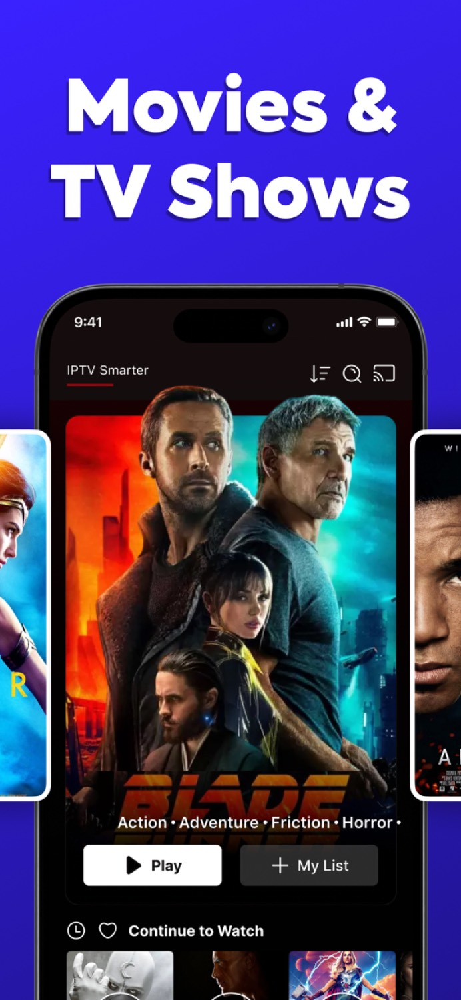
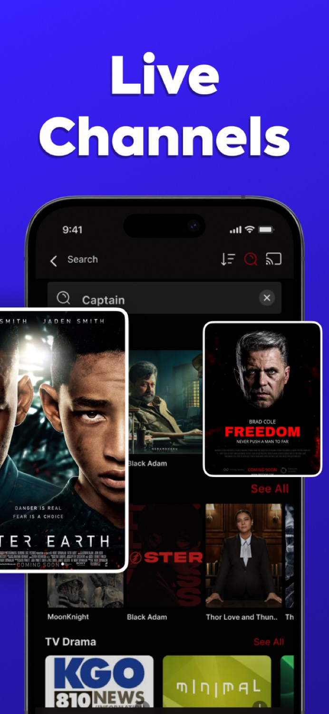
GSE 是这批产品里「导入方式」和「播放器可调项」最完整的。它把源管理放在侧边抽屉的第一屏，说明在它的用户心智里，源就是产品本身。
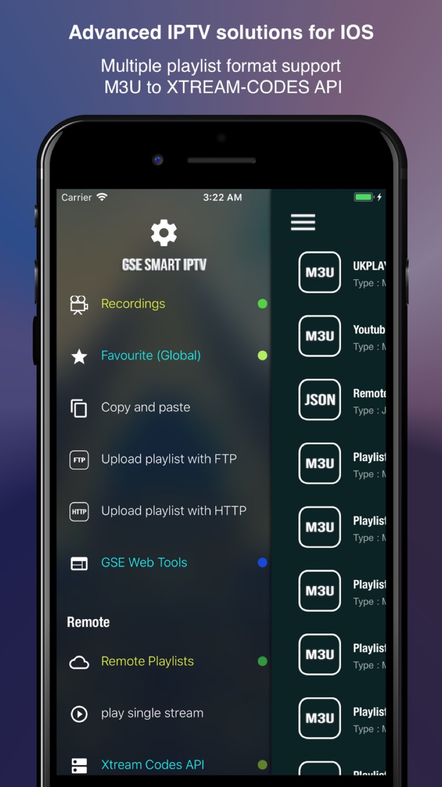
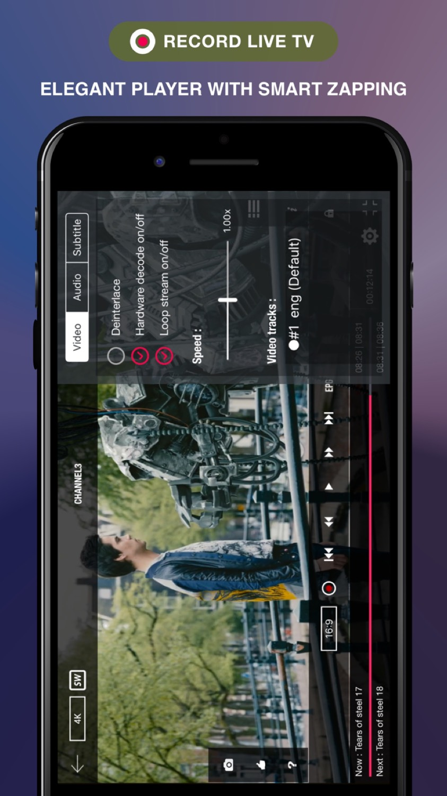
URL、复制粘贴文本、FTP 上传、HTTP 上传、远程播放列表 / Xtream API。列表卡上直接标 M3U / JSON 格式徽标。
① 「播放单条流」入口；② 硬件解码 / 循环流开关；③ 源格式徽标与「Type: M3U」的透明表达。
视觉陈旧、层级偏深；播放器 OSD 信息过载，普通用户不知道「Deinterlace」是什么。
公开资料一致指向同一个画像：多源合并、精细 EPG 映射、时移 / 回看、频道号、脚本化更新、多窗口。界面信息密度极高，设置项按「工程师思维」组织。本节为结构还原，不含截图。
不借：多层设置树、脚本、过多播放参数。
极简列表 + 半透明节目条 + 收藏 + 简单录制。多年少更新，但它的取舍仍然有效：当性能有限时，先砍动效和图层，不砍 EPG。
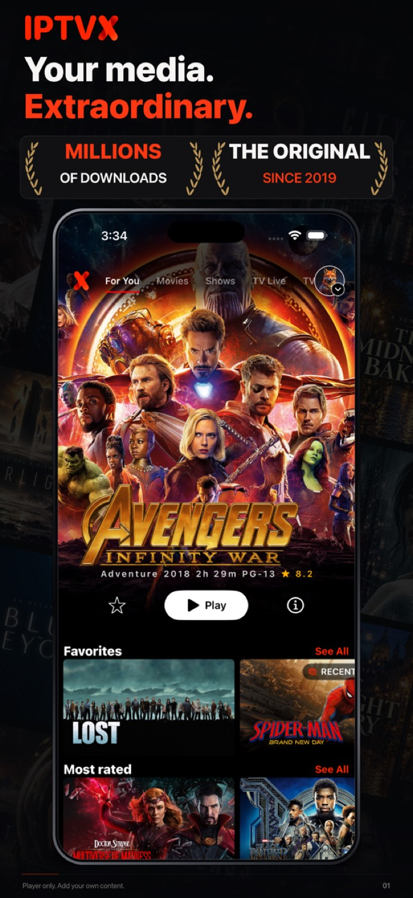
「最近」不一定要做成侧边栏分组，也可以作为频道卡上的一个角标 / 一个自动置顶的虚拟组。桌面端更适合前者。
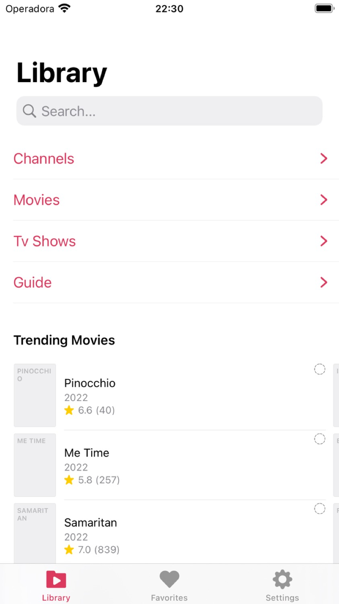
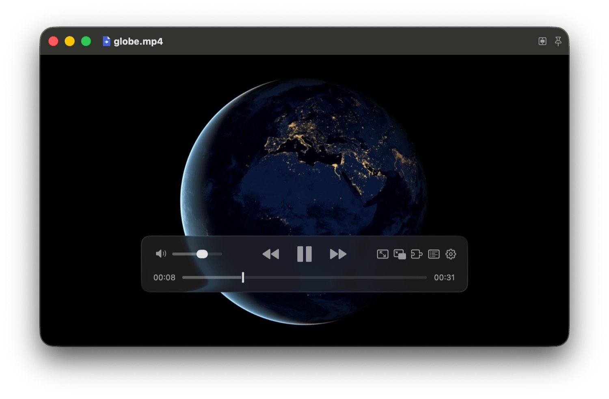
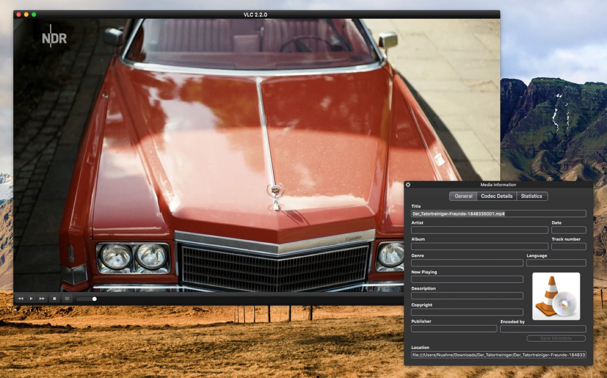
「粘贴一个地址就能播」的快捷入口；流信息面板（协议、容器、编码、码率、缓冲）；以及一个「换到系统播放器 / IINA / VLC」的兜底出口。
通用播放器没有源管理、EPG、收藏与频道语义。它们的价值是「最后一道保险」，不是产品方向。
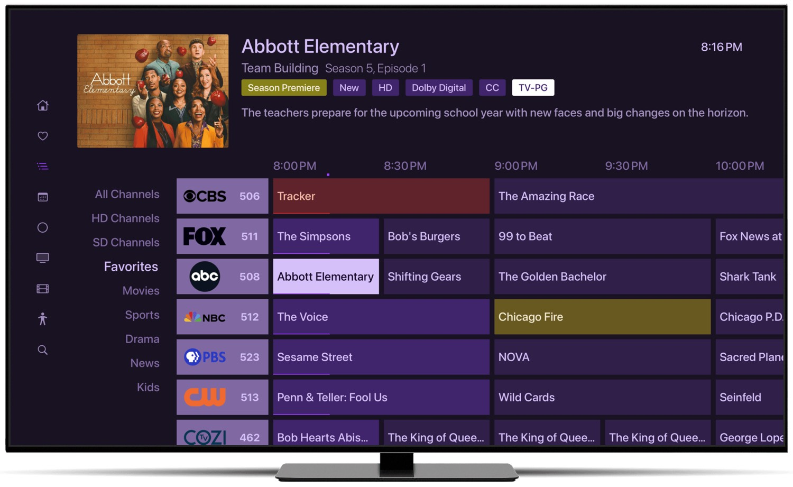
Channels 的多画面是「为体育而生」的 4 宫格：无控制条、画面贴边、每格右上角保留台标水印。它说明多画面不是简单平铺，而是把切换成本降到零。
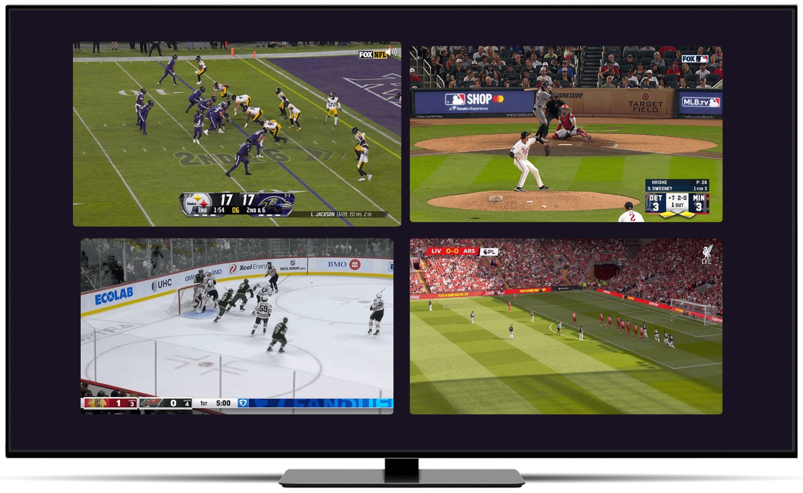
来源：getchannels.com 官方截图。我们列为 P2。
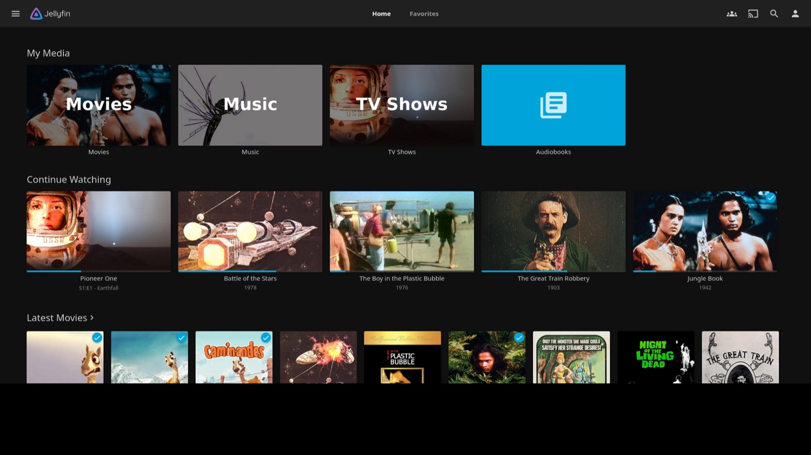
Jellyfin 的价值不在视觉，而在能力清单可验证：M3U tuner + XMLTV、服务端 EPG、录制、多用户、转码。它证明了「EPG 与录制是服务器能力，不是播放器 UI 能力」——这也是我们不应该自建录制服务的原因。
国内电视端直播软件的共性非常强：打开即播、上下换台、数字键直达、长按收藏、侧边节目单。它们不追求海报墙和推荐流，而是把「遥控器盲操作」做到极致。这一节补上 9 个国内样本，其中 4 个有真实界面截图。
| 产品 | 形态 | 频道组织 | 交互特征 | 变现 / 风险 | 对我们的价值 |
|---|---|---|---|---|---|
| 火星直播 | 第三方聚合 · TV | 左侧分类 + 编号频道列表 | 数字键、长按收藏、竖排节目单、分享码 | VIP + 广告；源合规风险 | 编号秩序、列表内 Now、节目单入口 |
| 小薇直播 | 第三方聚合 · TV | 分类 / 频道 / 节目单三栏 | 上下换台、数字键、多线路、手机遥控 | 广告 / 会员；源合规风险 | 边看边选台、单频道时间表 |
| 我的电视 my-tv | 开源 · Android TV | 底部频道带 + 分组 | 数字选台、换台反转、多线路、EPG 回看、自定义源 | 免费开源；依赖用户源 | 底部频道带、技术状态、设置语言 |
| HDP 直播 | 老牌第三方 · TV | 分类 + 频道列表 | 数字键、上下换台、多线路 | 广告；源合规风险 | 低门槛、遥控器优先 |
| 星火电视 / 星火直播 | 第三方 · TV + 手机 | 分类 + 频道 + 赛事 | 直播 + 体育赛事、分享码、多线路 | 会员 + 广告；合规风险 | 赛事入口与「即将开始」 |
| 电视家（已停服） | 历史第三方 · TV | 宫格 + 频道号 | 上下换台、7 天回看、多线路 | 2023 年底停服 | 国内用户预期的来源 |
| 央视频 TV | 官方 · TV | 内容门户 + 赛事 / 直播 | 遥控器、预约、官方内容 | 免费 + 会员 | 官方「活动 / 赛事」组织方式 |
| 咪咕视频 TV | 官方 · TV / 手机 | 体育 / 影视门户 + 直播 | 体育赛事优先、多屏、投屏 | 会员 | 体育直播的场景设计 |
| 运营商 IPTV | 专网机顶盒 | 频道号 + 宫格 + EPG | 数字键直达、7 天回看、时移 | 宽带捆绑 | 最成熟的回看 / EPG 体验 |
| 秒看电视 / 云海电视等 | 同类聚合 · TV | 宫格 + 节目单 | 轻量、少广告（宣传） | 源合规风险 | 「轻量派」的减法参照 |
火星直播的界面几乎没有装饰：左侧分类、中间编号列表、右侧留白播放。它的聪明之处在于，把「第几个台、现在播什么、怎么收藏」全部压进同一列。
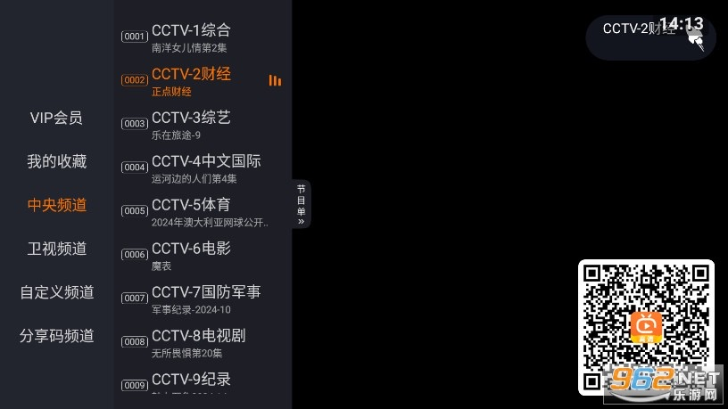
[0001] 编号 + 台名 + 当前节目呈现；正在播的台用橙色播放指示；右缘竖排「节目单」。来源：乐游网公开截图（2024）。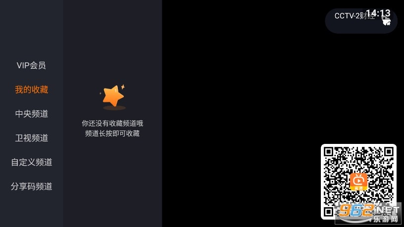
[0001] 到 [0009] 连续编号，用户可以用数字键盲跳。取舍：不学「分享码」这种依赖第三方源的机制，只学编号、Now、侧边节目单。
小薇把「频道选择」和「节目单」直接叠在直播画面上：左分类、中频道、右节目单。用户不需要离开画面，就能完成「换台 + 看接下来播什么」。
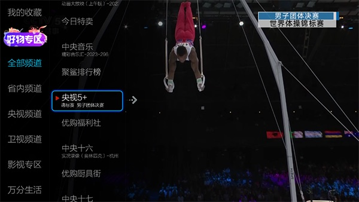
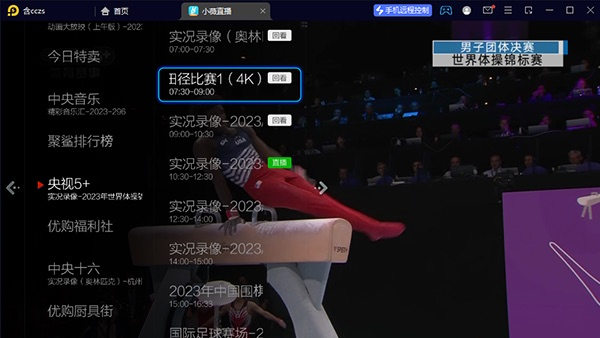
my-tv 是开源 Android TV 直播里完成度很高的一个。它没有做「门户」，而是把电视端最需要的三件事做扎实：底部频道带、Now/Next、可选的技术状态。
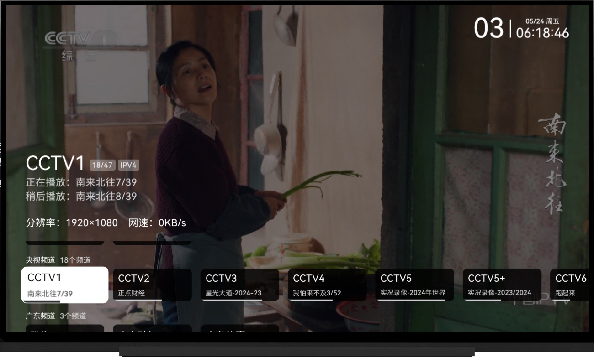
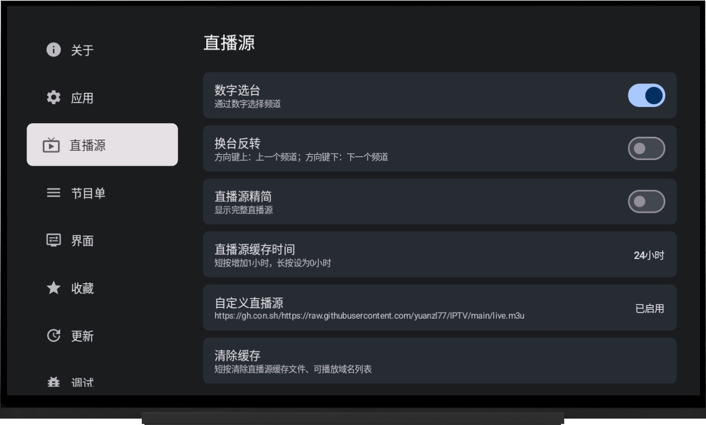
关于 / 应用 / 直播源 / 节目单 / 界面 / 收藏 / 更新 / 调试；直播源内包含数字选台、换台反转、精简、缓存时间、自定义地址、清除缓存。
底部频道带 → 我们播放器缺的那一层；数字选台 → 键盘数字；换台反转 → ↑↓ 方向可配置；缓存时间 → 我们目前只有一次性加载。
央视频 TV 是这批样本里唯一的官方大屏产品。它没有做「频道优先」，而是把直播藏进内容体系里：电视剧、电影、新闻、综艺是主入口，直播靠赛事和活动拉动。
拾光的电视模块是「频道优先 + 本地媒体库」，不应该把首屏让给运营位。可借的只有「赛事 / 节目预约」这一个能力，且放在 P2。
老牌第三方，遥控器优先：数字键、上下换台、多线路。它证明「操作简单」比「功能多」更能留住客厅用户。
直播 + 体育赛事并重，官网首屏就是赛程与「即将开始」。赛事是它区别于纯频道聚合的抓手。
宫格 + 频道号 + 7 天回看 + 多线路，塑造了国内用户对「电视直播」的全部预期；2023 年底停服。
频道号直达、EPG 准确、7 天回看 / 时移稳定。它是最成熟的形态，但依赖专网与牌照，无法复制。
| 动作 | 国内电视端常见惯例 | 拾光现状 | 桌面端转译 |
|---|---|---|---|
| 启动 | 直接续播上次频道 | 进入频道墙 | 可选「恢复上次频道」，默认仍进列表 |
| 上下键 | 换台，画面不离开 | 无 | ↑↓ 换台 + 底部频道带 |
| 数字键 | 频道号直达 | 无 | 输入数字 → 频道号浮层 → 回车跳转 |
| 单击 / OK | 呼出频道列表，不切页 | 打开播放器 | 播放中单击呼出 OSD / 频道带 |
| 左右键 | 切换线路或音量 | 无 | ←→ 切换线路，音量交给系统 |
| 长按 / 菜单 | 收藏、节目单、设置 | 无 | 右键菜单：收藏 / 线路 / 节目单 |
| 返回 | OSD → 列表 → 退出，逐层 | Esc 直接关闭 | Esc 逐层：节目单 → 频道带 → 关闭 |
| 节目单 | 侧边抽屉或单频道时间表 | 无 | 侧栏 320px 时间表 + 全屏 Guide 双形态 |
| 范式 | 首屏任务 | 信息密度 | 适合 | 我们的取舍 |
|---|---|---|---|---|
| A 三栏 | 换台 / 找台 | 中 | 遥控器、常看固定几个台 | 主范式，但用鼠标悬停 + 右键菜单替代焦点 |
| B 门户 | 发现内容 | 低 | 手机、订阅型账号 | 只借「统一搜索」，不做运营位 |
| C Guide | 按时间找节目 | 高 | 体育 / 新闻 / 追节目 | 第二视图：频道页内切换「海报墙 / 节目单」 |
| D 极简 | 快速进入 | 低 | 轻度用户 | 借「收藏 / 最近」两个虚拟分组 |
一屏 6–9 个，靠台标识别，适合「逛」和「认台」。问题是密度低，200 个台要滚很久；且当前卡片没有节目信息。
一屏 14–18 行，频道号 + 台标 + 台名 + Now/Next + 收藏星标。适合「扫」和「数字键跳转」，也是电视端的默认形态。
一屏 8–12 行，按时间横读。适合「今晚有什么」，不适合找台。三者不是替代关系，是三个任务。
TiviMate 把频道号做成 OSD 里最大的字符；运营商盒子直接用数字键换台。频道号是肌肉记忆的入口，尤其对固定看几个台的用户。桌面端可以用「输入数字 → 浮层跳转」实现，不需要遥控器。
建议：频道号默认按「源内顺序」生成，允许用户改；与收藏一起持久化。
落地：频道号已按源内顺序生成，贯穿卡片 / 节目单 / OSD，数字键可直达；手动改号尚未开放。
epg.xml）与 Xtream EPG。x-tvg-url / url-tvg。tvg-id 精确匹配。顶部节目条 + 最近频道。回答「看什么、接下来什么、还能看什么」。信息密度最高，最像电视。
解码、循环流、音轨、字幕全部暴露。适合排障，不适合日常。
一条悬浮胶囊，画面优先。适合桌面通用播放，但缺少频道语义。
直播流的失败是常态，不是异常。竞品的差异不在「会不会失败」，而在失败后用户是否察觉。下面是需要覆盖的错误分类与对应动作：
| 失败类型 | 表现 | 建议动作 | 用户可见反馈 |
|---|---|---|---|
| DNS / 连接超时 | 长时间转圈或立即失败 | 8 秒起播超时后切下一条 | 「线路 1 超时，正在切换」 |
| HTTP 403 / 401 | 有响应但拒绝 | 立即切下一条（不要重试同一条） | 角标「线路 1/5 不可用」 |
| HTTP 404 / 分片 404 | HLS 播放几秒后中断 | 判为线路失效，切下一条并标记 | 「播放中断，已切换线路」 |
| 解码失败 / 不支持的编码 | 黑屏、卡住、只有声音 | 先尝试系统播放器，再切线路 | 「编码不兼容，已切换播放内核」 |
| Referer / UA 校验 | 403 或直接断开 | 带源内请求头重试一次 | 提示「该源需要请求头」，可编辑 |
| 地理封锁 | 403 / 空流 | 切下一条；全失败则明确说明 | 「该源在当前网络不可用」 |
| 流正常结束 | 播放停止但无错误 | 直播场景自动重连当前线路 | 「直播已断开，正在重连」 |
不告知就换线，用户可能从 1080p 掉到 480p，或从 A 源换到 B 源，画质与台标不一致，产生「这产品不稳定」的印象。
顶部一条 3 秒提示「线路 1 失败，已切换到线路 2」，OSD 内保留「线路 2/5」可点，点开可手动选回或锁定当前线路。
落地：超时 / 403 / 装片失败已按「切下一条 + Toast + OSD 线路面板」实现；解码失败会先回系统播放器；直播断开由转封装自动重连。地理封锁与请求头错误在全失败卡片里逐条说明原因。
#EXTM3U，比让他存文件再上传顺。落地：EPG 地址、User-Agent / Referer 已实现；更新策略与手动源优先级未做。
延迟、频道数、上次检测、错误原因。我们已有，缺「下次检测时间」与「连续失败次数」。
串行检测 + 统一任务中心是优势。建议在侧边栏源行上显示一个 3px 进度条或脉冲点，而不是只靠状态页。
源失效超过 24 小时才升级为「角标 + 一行建议」，避免每次失败都打扰。文案要给出下一步：「打开状态页」「更换地址」「停用该源」。
| 状态 | 我们现状 | 竞品常见做法 | 建议 |
|---|---|---|---|
| 模块关闭 | 已有说明 + 开启按钮 | 多数无此态 | 保留，补一句「开启后不会自动播放」 |
| 无源 | 导入 + 恢复默认 | 只给导入 | 保留「恢复内置源」，这是我们的差异点 |
| 源无频道 | 提示去检测 | 多为一句话 | 补「去检测」按钮，直接跳到该源 |
| 搜索无结果 | 已有文案 | 普遍较好 | 补「清除筛选」快捷动作 |
| 加载失败 | 错误组件 + 重试 | 普遍较差 | 补错误分类文案（超时 / 403 / 解析失败） |
| 产品 | 底色 | 主色 / 强调 | 卡片与材质 | 信息密度 | 气质 |
|---|---|---|---|---|---|
| TiviMate | 近黑 / 半透明 | 白 + 节目高亮 | 无卡片，直接贴画面 | 高 | 工具、克制 |
| Smarters | 深灰 + 蓝紫 | 品牌蓝 | 大圆角海报、轮播 | 低 | 门户、商业化 |
| Channels | 深紫黑 | 紫 / 红 / 橄榄 | 网格 + 顶部详情带 | 高 | 客厅、节目为中心 |
| Jellyfin | 纯黑 | 蓝紫 | 横向货架 | 中 | 媒体库、中性 |
| IINA | 跟随画面 | 系统灰 | 悬浮胶囊 | 极低 | 桌面、轻 |
| 拾光 2.0 | 深墨蓝渐变 | 信号红 / 电波青 / 金 | 16:9 信号面板 + 细描边 | 中 | 深夜直播、有品牌感 |
我们的视觉是这批产品里辨识度最高的之一。问题不在「好不好看」，而在「信息承载不足」：同样的卡片，竞品多塞了 Now/Next、频道号、收藏与线路状态。
| 任务 | 拾光 2.0 | TiviMate | Smarters | GSE | Channels | Jellyfin |
|---|---|---|---|---|---|---|
| 首次接入，看到第一个台 | 打开即用 → 选源 → 点台。2 步 | 装 App → 加列表 → 等解析 → 选台。4–5 步 | 登录 / 加账号 → 选 Live → 选台。4 步 | 加列表 → 选列表 → 选台。3–4 步 | 服务器 + tuner + EPG 配置 → 客户端选台。重 | 服务端配置 tuner → 客户端选台。重 |
| 找到想看的台 | 分组 chip + 搜索 + 列表密度；频道号 / 数字键直达。快 | 分组 → 列表 / 数字键直达。快 | 搜索 / 海报浏览。中 | 分组 + 收藏 + 最近。中 | 频道筛选栏 + 数字键。快 | Guide / 频道列表。中 |
| 确认「现在播什么」 | 频道卡 / OSD / 节目单都有 Now & Next；节目单支持时间轴与时间环。完整 | 节目条 + EPG + Next。完整 | EPG 依赖源，界面有节目。中 | 播放页有 Now/Next。完整 | Guide 为第一视图。完整 | Guide + 节目详情。完整 |
| 播放失败后继续看 | 403 / 超时自动顺延下一条线路；Toast 提示 + OSD 线路面板可手动锁定；全失败出诊断卡片。自愈 | 自动切线路 / 手动选线。自愈 | 自动重试 / 换线路（依版本）。中 | 可切换播放器与线路。中 | 服务端 tuner 重试。中 | 转码 / 重试，直播弱。弱 |
| 管理或更换源 | 源页：启停 / 重命名 / 删除 / 检测 / 恢复。清晰 | 设置内多列表管理。中 | 账号管理，偏简单。中 | 五种导入 + 远程列表。全 | 服务端设置，客户端不管理。重 | 服务端 tuner 管理。重 |
| 任务 | 火星直播 | 小薇直播 | 我的电视 | 拾光 2.0 |
|---|---|---|---|---|
| 看到第一个台 | 打开即播 | 打开即播 | 打开即播 / 上次频道 | 进入频道墙再点台（未做续播） |
| 找到想看的台 | 编号 + 数字键 + 分类 | 数字键 + 上下换台 | 数字选台 + 底部频道带 | 分组 chip + 搜索 + 数字键 + 列表密度 |
| 知道现在播什么 | 列表内 Now | 三栏 OSD + 时间表 | Now / Next + 分辨率 / 网速 | Now / Next + 节目单抽屉 + 时间环 |
| 播放失败 | 多线路切换 | 多线路切换 | 多线路 + 线路选择 | 多线路自动顺延 + OSD 线路面板 |
| 管理源 | 自定义频道 / 分享码 | 自定义源 | 自定义源 / 缓存设置 | 源页完整（更强） |
结论：国内产品的「源管理」普遍弱于我们；主路径上，我们的换台与节目单已经追平，唯一仍短的一步是「打开即播 / 续播上次频道」。拾光下一步补的是这一步，不是再加设置项。
| 能力 | 拾光 2.0 | TiviMate | Smarters | GSE | OTT Nav. | Channels | Jellyfin | VLC / IINA |
|---|---|---|---|---|---|---|---|---|
| 默认开箱接入（免配置） | ||||||||
| M3U 多源导入 | ||||||||
| Xtream Codes 账号 | ||||||||
| 导入前校验 | ||||||||
| 每源启停 / 重命名 / 删除 | ||||||||
| 连接检测 / 健康度 | ||||||||
| 检测任务队列 | ||||||||
| 画质去重 / 最优线路 | ||||||||
| 备用线路 / 失败自动切换 | ||||||||
| 手动切换线路 | ||||||||
| EPG 节目单（XMLTV） | ||||||||
| 每源独立 EPG 映射 | ||||||||
| Now / Next 节目条 | ||||||||
| 收藏 | ||||||||
| 最近观看 | ||||||||
| 频道号 / 数字键跳转 | ||||||||
| 列表 / 宫格双视图 | ||||||||
| 频道排序 / 屏蔽 | ||||||||
| 定时巡检 / 失效告警 | ||||||||
| 回看 / 时移 | ||||||||
| 录制 | ||||||||
| 多画面 | ||||||||
| 家长锁 | ||||||||
| 与本地媒体库统一 | ||||||||
| 桌面端体验 |
◐ 表示部分支持、需插件 / 后端 / 特定版本或特定源能力；本表用于方向判断，不替代逐版本核对。拾光 2.0 本次由 ○ 转 ● / ◐ 的 12 项：备用线路与失败自动切换、手动切换线路、XMLTV 节目单、Now / Next、收藏、最近、频道号与数字键、列表 / 宫格双视图、回看 / 时移、定时巡检、多画面。其中回看按源能力开放（公共源实测 3–4 天），时移窗口取决于转封装 / 源站缓冲；每源 EPG 映射目前是自动匹配（tvg-id → 台名归一化），没有手动映射表；定时巡检是进入信号页时补旧结果，不是后台定时任务。仍为 ○ 的：Xtream Codes、频道排序 / 屏蔽、录制、家长锁。
国内产品的差异不在「有没有」，而在「默认路径有多短」。这张表只看客厅场景的硬指标，并把拾光放在同一把尺子上。
| 能力 / 习惯 | 拾光 2.0 | 火星直播 | 小薇直播 | 我的电视 | HDP | 星火 | 央视频 TV | 运营商 IPTV |
|---|---|---|---|---|---|---|---|---|
| 打开即播 / 续播上次频道 | ||||||||
| 上下键换台 | ||||||||
| 数字键 / 频道号直达 | ||||||||
| 常驻频道条（分组横排） | ||||||||
| 列表 / OSD 内 Now / Next | ||||||||
| 单频道节目单（时间表） | ||||||||
| 时间轴 EPG 网格 | ||||||||
| 收藏（含长按 / 右键） | ||||||||
| 多线路切换 / 失败顺延 | ||||||||
| 7 天回看 / 时移 | ||||||||
| 自定义源 / 导入 | ||||||||
| 源健康 / 定时巡检 |
国内第三方产品的 EPG / 回看普遍依赖源能力，表中按「产品界面是否提供入口」判断，不代表所有频道可用。「央视频 TV」按官方版权能力判断。拾光 2.0 列已按当前实现标注：上下键换台、数字键直达、播放器底部频道带、OSD 内 Now / Next、单频道节目单抽屉、时间轴网格、收藏（右键 / 星标）、多线路与失败顺延均已实现；回看实测 3–4 天、时移受转封装 / 源站缓冲窗口限制，因此记 ◐；巡检在进入信号页时触发并保留 24 小时可用率采样，不是后台定时任务；打开即播 / 续播上次频道仍未做。
现状：每个频道保留 1 主 + 3 备（地址与 UA / Referer 一起入库）；403 / 超时 / 装片失败自动切下一条并 Toast「线路 1 失败，已切换到线路 2/3」；OSD 线路面板可手动锁定；全部失败才出居中卡片。
证据：我们自己保留多条候选后又丢弃，只留评分最高的一条（bestChannels）；TVChannel 只有一个 streamURL。而 TiviMate / Smarters / OTT Navigator 都把同频道多线路当默认能力，国内直播产品更是标配。
TVChannel 从单流改为 streams: [TVChannelStream]（url、headers、画质、HLS、score），按 score 降序；同时记录 lastGoodStreamID。现状：M3U 头部 url-tvg / x-tvg-url 自动读，也可在源库手填；XMLTV 按地址缓存 6 小时；频道卡、OSD、节目单抽屉都有 Now / Next；「节目回看」支持时间轴 / 传送门 / 时间环三种视图，日期只保留前天 / 昨天 / 今天 / 明天；预约走系统通知。
证据：频道页只显示台名与分组；竞品全部把 EPG 当作直播首页的核心信息。没有 EPG，「找台」只能靠记忆，直播退化成「能播几个台」。
x-tvg-url）；解析 XMLTV，落库 EPGProgram(channelKey, start, end, title, subtitle, category, desc)。tvg-id 精确 → 台名归一化 → 手动映射表；失败只降级，不阻断频道加载。现状：侧边栏有收藏 / 最近两个虚拟分组；频道卡与列表行右键可收藏；频道号自动生成并贯穿卡片、节目单与 OSD；数字键 1.5 秒缓冲直达；播放页底部频道带 ↑↓ 换台，悬停 400ms 出静音预览。
证据：频道列表按「分组 rank → 台名」固定排序，用户无法把常看的几个台固定在上方；TiviMate 的 OSD 第一屏就是「最近频道」，火星直播用编号 + 当前节目撑起整列，my-tv 用底部频道带完成换台。国内用户对「打开即播、上下换台、数字键直达」有肌肉记忆。
海报墙与紧凑列表两种密度已放在同一页切换；列表行含频道号、台标、台名、Now / Next 与收藏星标，搜索同时匹配频道名与节目名。
已做「进入信号页时低频巡检」：收藏频道优先探，其余补 6 小时前的旧结果，并保留 24 小时可用率采样（每小时一个点，最多 48 点）。还没有后台定时任务与主动告警推送；失败动作目前是重试 / 换线 / 查看信号页。
海外 / 自建源大量以 host + 用户名 + 密码提供。导入向导改为三段式：M3U 地址 / Xtream 账号 / 粘贴文本；保存前同样做一次真实拉取校验，并展示频道数与分组数。Xtream 需拉取 Live 分类与频道列表，VOD 暂不进入电视模块。
每源可填独立 EPG 地址，映射走「tvg-id 精确 → 台名归一化」自动匹配；还没有手动映射表，也没有分组隐藏 / 置顶 / 拖拽排序。
回看只在源声明 catch-up 模板时开放：EPG 中过去的节目可点，播放地址按模板拼接（支持 ${start} / ${utc} / ${(b)…} 与全局默认模板）。不自建录制服务。时移用转封装滑动窗口兜住直播，并把「画面停在…直播已经走到…」做成时间河；窗口长度取决于源站缓冲，界面按真实可 seek 区间缩放。
多画面已做 2×2 静音预览（点击切声音、双击放大），本质是预览帧而非四路同时解码；另外有「最近 30 秒」片段录制（ffmpeg 落盘到「影片 / 拾光电视片段」）。真正的定时录制、家长锁与投屏仍未做，涉及存储治理、版权与家庭场景，放在客厅增强阶段。
借 GSE 的 single stream 与 VLC 的兜底能力：提供一个临时播放入口，不落库、不进频道列表，用于验证源与排障。
TVChannel 保留候选线路；播放失败自动顺延并提示；侧边栏新增「收藏」「最近」两个虚拟分组；播放页新增底部频道带与 ↑↓ 换台；键盘数字唤起频道号跳转。
这一节不再比较竞品，而是给出我们自己的设计。基线来自现有实现：深墨蓝的模块身份、16:9 信号卡、源管理与检测队列、统一的工具栏胶囊；扩展方向来自国内电视端的「频道带 + 数字键 + 节目单」和海外产品的「Guide + Now/Next + 备用线路」。
| 现有实现 | 判断 | 处理 |
|---|---|---|
| 窗口工具栏胶囊（频道 / 电视源 / 状态） | 保留模式 | 扩成五个 Tab，仍放在工具栏中区，与「网络存储」「影院」一致。 |
| 深墨蓝底 + 信号红 / 电波青 / 金 | 保留概念 | 深色作为主视觉；浅色映射为同语义的浅底版本，颜色全部走主题 token，不硬编码。 |
TVHubView 强制 .environment(\.colorScheme, .dark) | 已改造 | 已删除全局强制深色；只有播放 OSD 覆盖层保持深色，其余跟随系统外观。 |
| 16:9 频道卡（台标、LIVE、画质、悬停浮起） | 保留 | 作为「海报墙」视图，补频道号、Now/Next、收藏星标。 |
| 分组 chip + 搜索 + 频道计数 | 保留 | 增加「只看收藏」，搜索扩展到节目名。 |
| 源行（开关 / 检测 / 频道 / 菜单 / 健康） | 保留 | 升级为「源库」，补 EPG 地址、更新策略、优先级。 |
| 状态页（任务队列 + 每源健康） | 拆分 | 队列与探测进「信号」，源健康进「源库」，不再单独占一页。 |
| 串行检测 + 统一任务中心 | 保留 | 从「拉列表」升级为「拉列表 + 媒体探测 + 截帧」。 |
| 侧边栏源列表 + 拖拽排序 | 保留 | 顶部加「收藏 / 最近」两个虚拟分组。 |
| 空态 / 关闭态 / 错误态 | 保留 | 每个空态都补一个明确动作，不只给一句话。 |
| 播放复用查看器 + 悬浮控制条 | 保留并加层 | 保留底层播放能力，叠加电视 OSD、频道带与线路切换。 |
| Tab | 回答的问题 | 首屏 | 主操作 | 空态 |
|---|---|---|---|---|
| 直播 | 现在看哪个台？ | 收藏 / 最近 + 分组频道墙 | 点台即播、↑↓ 换台、右键菜单 | 「这个源还没有频道，去检测」＋按钮 |
| 节目回看 | 几点播什么？错过了怎么办？ | 时间轴 / 传送门 / 时间环 + 四天日期条 | 点节目看详情、回看、预约 | 「该源未提供 EPG，指定地址」 |
| 信号 | 为什么卡 / 哪条线最稳？ | 探测画面网格 + 健康摘要 | 探测全部、看详情、设默认线路 | 「还没有探测结果，先探测收藏频道」 |
| 源库 | 源从哪来、怎么维护？ | 源列表 + 健康摘要 | 导入、启停、检测、EPG / UA 配置 | 「导入第一个源 / 恢复内置源」 |
直播页保留现有海报墙，但每张卡必须回答「第几台、在播什么、接下来什么」。再提供一个 14–18 行/屏的列表视图，给「快速扫台」和「数字键跳转」用。
「全频直播」是跨源聚合视图，频道来自多个源、同名只留一份。现在顶部筛选行多了一枚「源」胶囊：全部源 / 我的 IPTV / APTV 公开源…，每一项带该源的频道数，选中后这一页只显示该源的频道（保留分组与排序），不改侧边栏焦点。从侧边栏进入某个源时这枚胶囊自动隐藏，避免两处源选择互相打架。
频道墙会给可见的卡片抓一帧实时画面，这股流量以前是「一个频道一次状态发布 + 一次整份历史落盘」：322 个频道意味着上千次整页重绘和上千次 JSON 编码，顶栏与侧边栏跟着抖。现在改成按批写回——每批探测只发布一次「探测中」和一次结果（状态 / 报告 / 采样各一次），采样历史合并成 0.8 秒一次落盘，任务条也只按批刷新；侧边栏每个源的分组按频道版本缓存，不再随探测状态重新分组；顶栏的「更新于 …」复用同一个 RelativeDateTimeFormatter，频道数也改成直接计数而不是为了一行字重新分组。
原先直播页上的「今晚赛事」「黄金时段」是两条横向货架，占地方又只能扫一眼。现在这两条货架从直播页移除，整体收进一个独立分页：窗口工具栏在「直播」后面多出今晚，页面里是两条长列表——赛事按「正在直播 / 稍后开赛」逐条列出，黄金时段按新闻 / 剧集 / 综艺 / 电影 / 纪实分组铺成网格，每张卡都标出频道号、台标、同播台数与入选理由。直播页因此回到纯粹的频道墙 + 筛选，不再被推荐挤占空间。
| 规则 | 做法 |
|---|---|
| 赛事识别 | 标题关键词（足球 / 篮球 / 联赛 / 杯 / 决赛 / NBA / 世界杯 / 奥运 …），体育频道的整档节目也算；「体育新闻 / 赛事预告 / 精彩回顾」这类栏目排除。 |
| 同播合并 | 同名赛事在 30 分钟桶里只留一条，频道多时优先 CCTV-5 → 体育频道 → CCTV → 卫视；黄金时段按 5 分钟桶合并同播，卡片显示「N 台同播」。 |
| 评分 | 同播台数 ×6；新闻 > 剧集 > 综艺 > 电影 > 纪实；新闻联播 +40、决赛 +25、半决赛 +15、首播 +15、直播中 +20；频道权重加成；越接近 20:00 权重越高。 |
| 可以解释 | 每张卡把入选理由做成标签（N 台同播 / 决赛 / 首播 / 20:00 档 / 全国联播），页面底部还有完整的规则说明，右上角「推荐规则」弹层是同一份内容的紧凑版。 |
直播页不再保留赛事 / 黄金时段货架，两条货架与「今晚」页共用同一套规则实现（TVTonightRules），只有「今晚」页这一处入口。
节目单与「直播」共用筛选与选中项：在 Guide 里点频道列会高亮列表中的同一个台；点节目详情里的「回看」直接进回看播放，不切 Tab。
这是本次最值得新增的 Tab。现有「检测」只回答「列表能不能拉到」，用户仍然不知道「这个台实际画面怎么样、哪条线最稳」。信号页用真实截帧 + 媒体参数给出证据。
截帧不是占位图：失败就明确写「无法截帧」，不伪造画面。
内置42 台 · 38 ms · 2 分钟前开检测现有播放器已经很强：悬浮可拖控制条、缩略图进度、章节、音轨字幕、画中画、截帧、全屏。研究时缺的是「频道语义」；现在已在同一播放层上叠好电视 OSD，并让直播真正走 .live 模式（不显示点播进度、不写续播）。
OSD 4 秒无操作淡出；鼠标移动 / 按键唤醒；换台后保留 2.5 秒；顶部信息条与底部频道带都不遮画面中心。
播放窗口底部控制条右侧的读数胶囊（线路 2/3 · HLS）不再是静态文字：线路多于一条时，「线路 N/M」变成下拉菜单，逐条列出「线路 1 · HLS / 线路 2 · HTTP」，当前线路打勾，点选即换线并写入该频道的默认线路记忆。只有一条线路时保持纯读数，不出现无意义的下拉箭头。协议标签优先用换线时记录的元数据（tvLineMetadata），缺失时回落到频道当前协议，所以 HLS / HTTP 混排的源也不会标错。
这意味着「换线」不必先失败：用户看到画面卡顿或画质差，可以直接在控制条上切到另一条源，失败自动顺延仍作为兜底保留。
抽屉宽 340px（窄屏不超过画面 42%），只覆盖右侧；左侧画面继续播放。Esc 先收起抽屉，再隐藏 OSD，最后退出播放。
切换成功时只给顶部 3 秒轻提示，不打断画面；全部失败才升级为居中卡片，并明确列出每条线路的原因。
| 区域 | 控件 | 行为 |
|---|---|---|
| 顶部 | 频道号 / 台标 / 台名 / Now / Next | 信息展示，点击节目名展开详情 |
| 顶部右 | 节目单 / 线路 / 统计 | 抽屉、线路面板、参数叠加 |
| 底部 | 频道带 | 点击换台，悬停预览（P2） |
| 底部控制 | ↑↓ / 数字 / 线路 / 收藏 / EPG / 统计 / PiP / 全屏 | 全部可键鼠操作 |
| 右键 | 收藏、切线路、复制地址、打开信号页 | 与频道卡菜单一致 |
| 按键 | 直播 | 回看 |
|---|---|---|
↑ ↓ | 上 / 下一个频道 | 音量（或列表移动） |
0–9 | 频道号输入（1.5 秒缓冲） | 进度百分比跳转 |
← → | 切换线路 | 后退 / 前进 10 秒 |
Space / K | 提示「直播中」 | 播放 / 暂停 |
E | 节目单抽屉 | 节目单抽屉 |
L | 线路面板 | 线路面板 |
S | 收藏频道 | 收藏频道 |
I | 统计叠加 | 统计叠加 |
F / Esc | 全屏 / 逐层退出 | 全屏 / 逐层退出 |
VideoPlaybackStage 在装片时把 playbackSession.playbackMode 固定成 .vod（VideoPlayback.swift），所以直播仍会显示进度条与续播。电视入口应显式传 .live，由 PlaybackCapabilities 隐藏进度与续播、启用频道带；回看则继续走 VOD 能力，但加「回到直播」与节目边界。
| 功能 | 一句话描述 | 价值 | 成本 | 优先级 |
|---|---|---|---|---|
| 信号雷达 | 按延迟 / 可用率给频道排序，给出「今晚最稳的 10 个台」。 | 直接降低「点了播不了」 | 低（复用探测） | P0 |
| 时间河 / 时间门 | 时移用双时间轴，回看用传送环换日；让时间的方向可被看见。 | 把「回看 / 时移」从按钮变成体验 | 中 | P1 |
| 预切换预览 | 在频道带悬停 400ms，浮出静音小预览，确认再切换。 | 减少误切与等待 | 中（第二路解码） | P1 |
| AI 节目摘要 | 用 EPG 简介生成 2 行中文摘要，外语频道自动翻译。 | 解决「这节目讲什么」 | 中（已有 AI 服务） | P1 |
| 赛事聚合 | 从 EPG 分类识别体育节目，生成「今晚球赛」货架与开赛提醒。 | 体育是直播最强场景 | 中 | P1 |
| 截帧存相册 | 把当前画面连同频道 / 节目信息存进拾光图库。 | 复用现有截帧与图库 | 低 | P1 |
| 睡眠定时 | 30 / 60 / 90 分钟渐隐停止，适合睡前新闻。 | 客厅刚需 | 低 | P2 |
| 多画面 | 2×2 四个频道，点击放大，声音只跟一个。 | 体育 / 新闻场景 | 高（多解码） | P2 |
| 30 秒片段 | 从时移缓冲截取最近 30 秒，存为视频片段。 | 分享 / 回看高光 | 高（依赖时移） | P2 |
| 手机遥控 / 扫码导入 | 手机扫码输入频道号或把源推给桌面端。 | 手机与桌面协同 | 中 | P2 |
| 观看年报 | 最常看的台、总时长、最稳的源。 | 趣味与留存 | 低 | P2 |
实现状态：表格前 9 行已落地（时间河与七日隧道合计一行）——信号雷达（可用率 + 延迟前十）、时间河（暂停直播展开）、七日隧道（回看按天选门）、预切换预览（悬停 400ms）、节目摘要（EPG 简介两行）、赛事聚合（今晚赛事货架 + 开赛提醒）、截帧保存、睡眠定时（30 / 60 / 90）、多画面（2×2 静音预览）、30 秒片段（ffmpeg 录制）。手机遥控 / 扫码导入与观看年报未做。节目摘要只用节目单简介，不接翻译、不编造内容。
#0B0D16 → #131826 + 环境光；浅色 #F7F8FB → #FFFFFF，详见 9.11。lumaGlassCard，圆角 22；列表行圆角 8。Color.accentColor；暗底回退 #4DD6FA，浅底回退 #2F6DF6。#FF4D57 / 浅色 #D92D3A，直播与错误强调。#4DD6FA / 浅色 #0E7C99，已播节目与信息态。#FACC66 / 浅色 #A9761F，4K / HDR / 特别节目。#34C759、警告 #FF9F0A、失败 #FF453A；浅色用 #248A3D / #B45309 / #B42318。| 组件 | 尺寸 / 说明 |
|---|---|
TVHubTabs | 五段胶囊，高 24，字号 11.5，复用现有实现 |
ChannelTile | 16:9，最小宽 240；台标安全区 62% × 46% |
ChannelRow | 高 44；号 40 / 台标 32×20 / Now/Next |
GuideGrid | 频道列 180；30 分钟列 120；行 44 |
SignalCard | 16:9 截帧 + 三行参数；状态点 |
ChannelStrip | 高 96；卡 132×64；当前反白 |
EPGDrawer | 宽 340；行 44；Esc 逐层 |
LinePicker | 浮层 320×auto；每条线一行 |
TVToast | 顶部胶囊 360×36，3 秒 |
电视模块原来被 .environment(\.colorScheme, .dark) 锁死成深色，切到系统浅色也不会变。现在已经改成：页面、侧边栏、频道卡、节目单、信号卡全部跟随系统外观；只有播放 OSD 保留深色叠加，因为底下是视频画面，深色叠加才保证可读。
两张线框结构完全一致，只替换 token。浅色不是「把深色调亮」，而是重新给每类信息分配对比度。
TVBrand 的颜色已改为动态 NSColor，浅色 / 深色各自解析；页面无需重启即可切换。Color.accentColor；LIVE 红、4K 金、状态色是语义色，不跟强调色变。accessibilityReduceMotion；「提高对比度」的描边增强列为下一轮。播放 OSD 与时间仪器（时移 / 回看控制台）永远用深色实体质感，因为 OSD 底下是任意亮度的视频，而时间仪器是一台「放在页面里的设备」。浅色模式下变化的是窗口标题栏、侧边栏、播放列表与页面 chrome，不是 OSD 与仪器本体。
| 语义 | 深色 | 浅色 | 用途 |
|---|---|---|---|
| 页面底 | #0B0D16 → #131826 | #F7F8FB → #FFFFFF | 内容区背景 |
| 面板 / 卡片 | 白 4.5–7.5% | #FFFFFF + 4% 阴影 | 频道卡、面板、浮层 |
| 描边 | 白 8% | 黑 8% | 卡片、分割线 |
| 主 / 次 / 三级文字 | 白 94% / 62% / 38% | #1C2030 / #5B6172 / #8A8F9C | 台名、Now、元信息 |
| 交互 / 选中 | Color.accentColor（回退 #4DD6FA） | Color.accentColor（回退 #2F6DF6） | Tab、选中行、焦点环 |
| 直播红 | #FF4D57 | #D92D3A | LIVE、正在播、错误强调 |
| 可回看 | #4DD6FA | #0E7C99 | 已播节目、信息态 |
| 4K / 金 | #FACC66 | #A9761F | 4K、HDR、特别节目 |
| 正常 / 警告 / 失败 | #34C759 / #FF9F0A / #FF453A | #248A3D / #B45309 / #B42318 | 信号点、源状态 |
| 台标底板 | 白 6% | #F1F3F8 | 白色台标可见性 |
| Guide 正在播 / 已播 / 未来 | 红 30% / 青 20% / 白 5.5% | 红 14% / 蓝 12% / 灰 6% | 节目块 |
| 焦点环 | 2px 青 + 6px 光晕 | 2px 强调色 + 4px 光晕 | 键盘 / 遥控焦点 |
| 现状 | 原问题 | 现在的实现 |
|---|---|---|
TVHubView.swift 原来的 .environment(\.colorScheme, .dark) | 整个电视模块被锁死深色，系统浅色完全无效 | 已删除；页面跟随系统外观，只有播放 OSD 保持深色 |
| TVBrand.swift 写死 RGB 与深色渐变 | 无法响应外观切换，浅色下对比度不足 | 已改为动态 NSColor：signal / wave / gold / 背景 / 台标底板按外观解析 |
| TVChannelTile 白 4.5–7.5% 叠层 | 浅色背景上几乎不可见 | 已改为 TVBrand.surface / surfaceHover / stroke，浅色下自动变成黑 4.5–7.5% |
| qualityPill 固定金 / 青 | 浅色下金 / 青与白底对比不足 | 已改为 TVBrand.qualityStyle，4K 金 / 1080 青在浅色模式用深色值 |
| TVLogoImage 直接放在渐变上 | 白色台标在浅色背景会消失 | 已加台标底板 TVBrand.logoPlate（浅色 #F1F3F8）与细描边 |
| TVStatusView 固定 green / orange | 浅色下偏亮、对比不足 | 已改用 TVBrand.success / warning / danger；源行错误也统一为 danger |
| TVLiveBadge 与频道卡动效 | 呼吸与浮起不尊重「减少动态效果」 | 已接入 accessibilityReduceMotion：关闭呼吸与悬停浮起 |
| 播放控制条 深色玻璃 | 这是合理例外，但窗口 chrome 不应一起变黑 | 保留深色 OSD；外层窗口、标题栏、侧边栏跟随系统 |
swift build --target PhotosClone。页面不再强制深色，播放 OSD 保持深色；「提高对比度」的描边增强列为下一轮。
时移和回看不是两个按钮，而是两种时间体验：时移是「时间在走，你停住了」；回看是「你离开现在，进入过去」。概念设计要把这两个字面意思变成可操作的界面，而不是给进度条换一层皮。
把时移和回看当作一台精密的时间仪器来设计：黑曜石机身、烟熏玻璃、拉丝黄铜、胶片、钨丝光。高级感来自材质对比与光线，而不是更多颜色或更亮的霓虹。
时间仪器是页面里的「实体设备」：无论浅色还是深色，它都保持黑曜石与黄铜；外层页面、侧边栏和标题栏仍然跟随系统外观。
暂停直播后，底部不再是一条进度条，而是一条从过去流向现在的河：金色是被你看过的河段，红色斜纹是你与直播之间的时间差，最右侧的红线是仍在前进的直播。你停在河上，直播继续走，差距每秒变大。
材质：黑曜石底 + 烟熏玻璃 + 拉丝黄铜；光：左上一束钨丝暖光，右缘一道冷光。胶片条带齿孔、铜制滑块、红色激光直播边，都是可触摸的时间隐喻。
回看不是「往后拖进度条」，而是「去某一天」。早期稿把日子排成七层隧道；最终落地改用竖立的传送环：一枚向后倾斜 15° 的光环立在发光底座上，日期节点沿环分布，拖光环或点日期换日，环心显示所选日期、星期、节目数与频道数，点「穿越」时门向前一冲、白光外扩，节目列表从底部重新淡入。
下面是隧道方向的早期概念稿，保留作对照；实现以传送环为准。
材质：黑曜石长廊 + 磨砂玻璃拱门 + 黄铜门框；光：左上一束暖光穿过尘埃，右缘一道冷光勾边。日期是刻在门上的铜字，不是卡片上的文字。
| 维度 | 时间河（时移） | 七日隧道（回看） |
|---|---|---|
| 隐喻 | 河 / 倒带：你停在河上，直播继续流 | 隧道 / 时间门：你离开现在，进入某一天 |
| 方向 | 水平：过去 ←→ 现在 | 纵深：今天 → 昨天 → 前天 |
| 时间粒度 | 秒 / 分钟 | 天 / 节目 |
| 主交互 | 拖时间河、←→、滚轮、长按加速 | 滚轮翻日、↑↓ 选节目、Enter 穿越 |
| 回到现在 | 「回到直播」红色胶囊 + L | 顶部「现在」灯塔 + 一键回到直播 |
| 适用 | 体育、新闻、刚才错过的 30 秒 | 追剧、昨天错过的整档节目 |
accessibilityReduceMotion：取消惯性、粒子、3D 旋转；改为淡入淡出 + 数字标签。retainedStartSeconds 与 seek，直播边缘用独立时钟推进；回看依赖源的 catch-up 模板与 EPG，不能对不支持的源假装可用。概念稿不替代能力检测：没有时移就明确说「该源不支持时移」，没有回看就置灰并给出换源建议。
已落地 时间河的交互、拟物与动效已按概念稿实现：暂停即展开，胶片带（齿孔 / 五个时间点 / 青色当前格 / 红色 NOW）、金色已看河段、红色斜纹时间差、右缘红色直播线、铜制滑块与青色指针、滑块上沿的落后读数牌，拖动即 seek，「回到直播」跳回边缘；回看走「时间门传送环」（拖光环 / 点日期换日、环心数据与穿越动效）。唯一差异是河的长度按真实可 seek 窗口缩放，不画不存在的 -30 分钟。
「回看」和「节目单」不再分成两个一级页签：窗口工具栏收敛为直播 / 节目回看 / 信号 / 源库四页，「节目回看」页内再切三视图——时间轴（默认）/ 传送门 / 时间环。日期条与左侧频道选择三视图共用，换日子或换频道时三视图看到的是同一台、同一天。日期只保留四个有意义的日子：前天 / 昨天 / 今天 / 明天（更早的日期源站没有回看数据，更晚的也没有节目单），传送门的四个节点就分布在这一圈上——今天在正上方，明天在右、昨天在左、前天在下方。
节目按真实时长铺开（不再每 30 分钟切一格），圆角色块 + 左侧细色条，同套调色板；状态分层：直播高亮带进度线、可回看挂小签、不可回看压暗、待播低饱和。
表头是刻度尺 + 整点网格线，当前时间是一条带光点的红色竖线；频道列加宽到 200pt；时间窗读数胶囊补上日期，例如「今天 11/24 | 10:00 – 12:00」。
竖立的传送环 + 发光底座，四个日期节点沿环分布（胶囊式白底 / 选中青色），拖环或点日期换日，环心显示所选日期、节目数与频道数。
浅色主题下换成暖白瓷面底座与淡紫雾，节点改为白底深字，黄铜与青色只留在描边上。
一整天卷成一圈：整圈一条连续锥形渐变色带，节目之间只留深色细缝，不再一档一块硬色；直播叠信号红柔光，不可回看的已播压暗，待播降饱和。
指针是一束从表带扫向中央的追光 + 一枚金色唱针，针头做成「放映镜头」；中央圆显示日期、HH:mm、频道号与台名、当前节目、时段与状态，并直接给出一个圆形播放键（播放直播 / 回看这档 / 预约提醒）。
时间环的正中央只做展示和操作：鼠标挪进中央信息圆不选段、指针也不转——表带之外的区域不再响应拖动与悬停，所以播放 / 预约按钮不会被指针的拖动抢走事件；鼠标停在中央时，圆里保持上一次选中的那档节目。表盘仍只认表带这一圈（RingDonut 命中 + 半径判定双保险），中央圆外到表带之间的留白也不会误触。
浅色主题：表盘从黑曜石换成暖白瓷面（0.99 → 0.885 的竖向渐变），刻度与小时字改用 Color.primary 派生透明度，色带状态改用白色叠加而不是压黑，指针改成白镜筒 + 深金环；深色下仍是黑镜筒 + 金环 + 白灯芯。传送门同理。
回看舱（播放中的工具栏）：回看播放时窗口工具栏的频道舱会切成回看语义——频道号与台标后显示正在回看的那一档与「昨天 20:04」；信息行下方单独一行是真正的播放进度：已播 · 金色轨道 · 总时长，整条 16pt 都是热区，悬停轨道加粗、播放头放大，点按或拖动即时定位、松手落位（复用播放页同一条 VideoScrubber），不再是舱底那条 1.5pt 只能看的细线。总时长优先取播放器解析出的真实片长，解析不出时用节目单时长兜底，不会再停在 00:00。直播仍保留绿点与 60 秒推进的节目进度细线。这样回看既知道「看的是哪一档、哪天几点」，也随时知道「还剩多久」，而且随时能拖。回看时 ← / → 直接快退 / 快进（步长跟设置里的「快进步长」一致），不再翻上一条 / 下一条；直播的 ← / → 仍用于切换线路。
工具栏的「播放选项」菜单也改成快照模式：它不再跟着播放器每 250ms 发布的时间重绘，展开「显示方式 / 画面比例」这类子菜单时不会被刷新收起，可以正常点选。
| 阶段 | 范围 | 代码落点 | 验收 |
|---|---|---|---|
| 1 结构 | 五 Tab、收藏 / 最近、频道号、深浅色 token 已实现 | TVHubTab、IPTVBrowserModel、TVModels、SidebarView、TVBrand 动态色 | 侧边栏出现收藏 / 最近；重启保持；五 Tab 可切换；系统外观切换无深色残块。 |
| 2 播放 | 直播 OSD、频道带、↑↓ 换台、数字键、节目单抽屉 已实现；线路切换与失败自动顺延 已实现 | VideoPlayback.swift、新增 TVPlaybackOverlay.swift | 直播不显示进度条；↑↓ 换台；403 自动顺延并提示。 |
| 3 节目单 | XMLTV、Guide（时间轴 / 时间环）、抽屉、Now/Next 已实现 | TVEPGService.swift、TVEPGModels.swift、TVHubView.swift | 带 EPG 的源 30 秒出节目；Guide 时间线正确。 |
| 4 回看 | catch-up 模板、7 天列表、回看播放 已实现 | TVModels catch-up 字段、TVCatchupURL.swift、LibraryStore+TV.swift | 支持的源可回看；不支持明确降级。 |
| 5 信号 | 截帧、TTFB / 码率 / 分辨率 / 延迟 / 线路数 已实现；24 小时可用率采样与进入信号页巡检 已实现；后台定时任务与告警推送 未做 | TVPreviewCache.swift、IPTVBrowserModel.patrolStaleSignals、TVHubView.swift 信号页，复用 SourceJobCenter | 探测全部有进度；截帧可见；异常能给出原因。 |
本轮没有改架构：仍然是「窗口工具栏分页 + SQLite / UserDefaults 持久化 + 复用查看器播放」，只把报告里的能力补进现有骨架。下面列出的代码位置就是现在的实际实现。
| 能力 | 用户能看到什么 | 实现位置 |
|---|---|---|
| 五个 Tab | 直播 / 今晚 / 节目回看 / 信号 / 源库；切换写进 SQLite，重启沿用。「回看」与「节目单」已合并成「节目回看」，页内再切时间轴 / 传送门 / 时间环；「今晚」把赛事与黄金时段展开成长页面。 | TVHubView.swift、TVModels.swift |
| 收藏 / 最近 | 侧边栏两个虚拟分组；频道卡星标；播放器 S 键收藏；最近按打开顺序保留。 | SidebarView.swift、IPTVBrowserModel.swift |
| 直播两种密度 | 海报墙每张卡显示 Now / 时间 / 2px 进度；列表密度固定列快速扫台；搜索同时匹配频道名与节目名。 | TVChannelsView、TVChannelTile / TVChannelRow、visibleChannels |
| 全频直播 · 按源筛选 | 顶部「源」胶囊列出全部源与各源频道数；选中后这一页只看该源的频道，分组与排序不变；侧边栏已聚焦某个源时胶囊自动隐藏。 | TVChannelsView.sourceFilterMenu |
| 今晚页 | 独立分页：赛事按「正在直播 / 稍后开赛」长列表，黄金时段按新闻 / 剧集 / 综艺 / 电影 / 纪实分组；卡片带频道号、台标、同播台数与入选理由；页面底部与右上角弹层各有完整规则说明。 | TVTonightView / TVTonightRules |
| 节目单时间轴 | 前天 / 昨天 / 今天 / 明天四天；节目按真实时长铺开（圆角色块 + 左侧细色条），状态分层（直播高亮 + 进度线 / 可回看小签 / 不可回看压暗 / 待播低饱和）；刻度尺表头 + 整点网格 + 带光点的红色当前时间线；频道列 200pt；顶部时间窗胶囊同时给出日期「今天 11/24 | 10:00 – 12:00」，窗口可在 1–12 小时之间调。 | TVGuideView |
| 节目回看 · 时间环 | 一整天卷成一圈：整圈一条连续锥形渐变色带，节目之间只留深色细缝；直播叠信号红柔光、不可回看的已播压暗、待播降饱和、选中加白色内衬。指针由「追光 + 金色唱针 + 放映镜头针头」组成；中央圆随指针显示日期 / HH:mm / 频道号与台名 / 当前节目 / 时段与状态，并带圆形播放键（播放直播 · 回看这档 · 预约提醒）。中央信息圆内不响应拖动与悬停，所以指针不会转、按钮点得到；只有表带这一圈可转动。深色 / 浅色两套表盘材质。 | TVTimeRingStage.swift |
| 传送门 · 频道与节目栏 | 左侧频道栏（支持回看的排前面、不支持的置灰），右侧该频道当天节目；支持节目搜索；直播 / 可回看 / 已结束状态明确。与时间轴、时间环共用同一份选中频道与日期。 | TVCatchupView |
| 频道号 | 卡片、节目单、播放 OSD 都显示等宽频道号；数字键 1.5 秒缓冲直达。 | channelNumber(for:)、VideoPlayback.handleKey |
| EPG 节目单 | M3U 的 url-tvg / x-tvg-url 自动读，也可在源库手填；内置源默认接入公共 XMLTV（jsDelivr 镜像，129 个频道 / 3.4 万条节目，覆盖央视、卫视、凤凰中文 / 资讯）；解析结果按地址落盘缓存 6 小时，清单 6 小时内直接用库里的副本，不重复拉取。 | TVEPGService.swift、TVPlaylist.defaultEPGURLString、IPTVBrowserModel.refreshIfNeeded |
| 回看 | 支持逐条 catchup-source，也支持 #EXTM3U 头部的全局默认值（APTV 写法）；模板兼容 ${start}、${utc} 与 ${(b)yyyyMMddHHmmss}；?playseek= 查询串正确拼在原地址后。天数按 catchup-days，未声明时收敛到 3 天（实测公共源窗口 3–4 天），回看走 .vod 进度条。 | M3U.swift、TVCatchupURL.swift、TVChannel.effectiveCatchUpDays |
| 直播转封装 | 非 HLS 的直播源（http-flv / http-ts，或没有 .m3u8 后缀的直播地址）直接交给 ffmpeg 转成 fMP4 HLS，带 UA / Referer、断流自动重连、6 段滑动窗口；直播不落缓存、不查续播。 | VideoPlayback.load 直播分支、StreamPlanner.arguments(isLive:)、VideoStreamSession(isLive:) |
| 节目预约 | 节目单里给待播节目「预约」，开播时系统通知提醒；再点一次取消。提醒由系统持久化，重启仍有效。 | TVReminderCenter.swift、IPTVBrowserModel.toggleReminder |
| 候选线路 | 同一频道最多保留 1 主 + 3 备；线路地址、UA / Referer 一起入库；信号详情可「设为默认 / 恢复自动」；播放 OSD 有线路面板可直接点选，← → 也能循环；播放工具栏的「线路 N/M」胶囊本身也是下拉菜单（逐条列协议、当前线路打勾），不必等失败就能换线。 | M3UChannelCandidate.alternateEntries、TVChannel.alternateStreamURLs、TVDatabase.alt_stream_urls、TVPlaybackOverlay.lineMenu、PhotoViewer.readout |
| 失败自动顺延 | 直播 403 / 超时 / 装片失败时自动切下一条线，Toast 报「线路 1 失败，已切换到线路 2/3」；每条线最多试一次，全部失败才出错误卡片；回看与点播不受影响。 | advanceTVLineAfterFailure、handlePlaybackFailure / handleStreamFailureChange |
| 24 小时可用率 | 每次探测结果按小时落一份采样（保留 24 小时 / 最多 48 点），信号详情画成成功 / 失败小柱；打开信号页后台巡检收藏与 6 小时前的旧结果。 | recordProbePoint / availability / patrolStaleSignals、TVAvailabilityBar |
| 信号 | 16:9 真实截帧 + 分辨率 / 码率 / 首帧延迟 / 线路数；异常 / 4K / 收藏筛选，异常优先、延迟最低三个给「最稳」；悬停进详情，可复制流地址。 | TVPreviewCache.swift、TVStatusView / TVSignalDetailView |
| 源库摘要 | 已启用 / 异常 / 带 EPG / 可回看频道四项概览，直接对应下方源列表。 | TVOverviewView |
| 播放 OSD | 顶部大号频道号 + 白底台标章 + 台名 + Now & Next + 画质 / 线路；时移时频道号转为金色衬线并出现红色「回到直播」；底部频道带（悬停 400ms 出静音预览）；右侧节目单抽屉 340px（窄屏不超过画面 42%）按天切换；E / S / L 回直播 / ↑↓ / ←→ 切线路 / 数字键全部可用。 | TVPlaybackOverlay.swift、VideoPlayback.tvOverlay |
| 时间河（时移） | 暂停直播即展开：画面 / 直播 / 落后三个读数，画面中央同步显示「画面停在…直播已经走到…」；胶片带上下两排齿孔，当前格用暂停时的真实截帧、越往前越暗越不饱和，NOW 格红色描边；金色已看河段 + 红色斜纹时间差 + 呼吸的右缘红线；拉丝铜滑块带青色指针，上沿挂落后读数牌。拖动即 seek；时移里 ← / → 按 10 秒步进，河上也有 ±10 秒按钮；「回到直播」先做 240ms 河段收束动画再跳回边缘，L / Esc 同样回到直播。 | TVPlaybackOverlay.timeRiver / returnToLive、VideoPlayback.seekTimeshift |
| 传送门（回看） | 回看不是拖进度条，而是「去某一天」：竖立的传送环立在发光底座上，环上只有四个日期节点（前天 / 昨天 / 今天 / 明天）——今天在正上方，明天在右、昨天在左、前天在下方；拖环、点节点或用左右箭头换日，环心显示所选日期、星期、节目数与频道数；选中层有青色高亮与门框光，右侧节目列表随之淡入。深色 / 浅色两套材质。 | TVCatchupView.portalRing / portalDayMarkers / portalCenter |
| 失败与换线 | 全部线路失败才升级为居中卡片，顶部仍保留频道号 / 台标 / 节目名（去掉进度与按钮）；卡片标题「这个频道暂时看不了」，逐条列出「线路 1 超时、线路 2 返回 403、线路 3 无响应」，按钮为重试 / 换一条线路 / 打开信号页 / 复制流地址；成功换线只给顶部 Toast。 | tvFailureCard、LibraryStore.tvLineFailureNotes、TVPlaybackOverlay.failureMode |
| 创意功能池 | 信号雷达（可用率 + 延迟排前十）、预切换预览（频道带悬停 400ms 出静音画面）、节目摘要（EPG 简介两行）、今晚赛事货架 + 开赛提醒、截帧保存、睡眠定时（30/60/90 分钟渐隐停止）、多画面（2×2 静音预览，点击切声音、双击放大）、30 秒片段（ffmpeg 录制到「影片/拾光电视片段」）。 | TVStatusView.radarStrip、channelChip、programSummary、tonightSports、TVClipRecorder、TVMultiviewSheet |
swift build 通过；swift run LumaContentChecks 全量断言通过。实测可用数据：EPG cdn.jsdelivr.net/gh/fanmingming/live@main/e.xml 返回 200（5.9MB，129 频道，节目覆盖 11-17 至 11-25）；回看源 101.35.240.114:88 的 live.php?id=CCTV1&playseek=… 与 phenix.php?id=fhzw&playseek=… 均 302 到 #EXT-X-PLAYLIST-TYPE:VOD 的 HLS，实测 11-21 至 11-23 可播。直播转封装用同一组参数实测 live.php?id=CCTV1 能持续产出 2 秒 fMP4 分片、6 段滑动窗口。